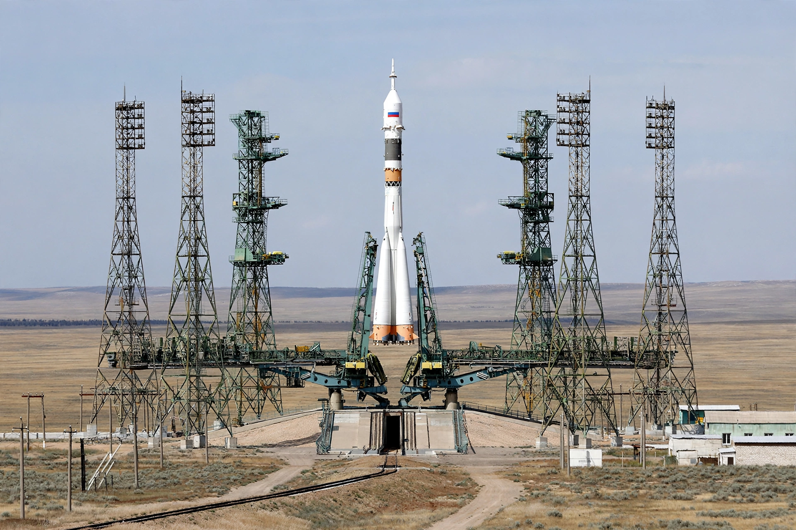

Baikonur Cosmodrome
From Wikipedia, the free encyclopedia

Gagarin's Start at Baikonur.The Baikonur Cosmodrome is the world's first and largest space launch facility, built by the Soviet Union in the 1950s on the steppe of Kazakhstan. From its pads were launched Sputnik 1, the first satellite, in 1957, and Vostok 1 carrying Yuri Gagarin in 1961. After the Soviet collapse the site found itself in independent Kazakhstan; Russia leases it — an arrangement currently running to 2050 — and it remains the launch site for all Russian crewed Soyuz missions.
The cosmodrome sprawls over some 6,700 square kilometres around the closed city of Baikonur (formerly Leninsk), which flies the Russian flag and uses the rouble. Its most storied pad, Site 1/5, is 'Gagarin's Start', from which every Soviet and Russian human spaceflight began for decades. Baikonur's inland location means spent rocket stages fall on the steppe, and its latitude of about 46°N is less favourable for equatorial launches than coastal sites — costs Russia accepted for secrecy and safety when the site was chosen.